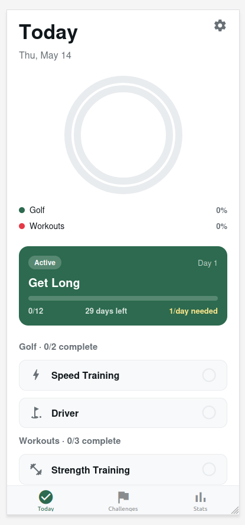

<!doctype html>
<html lang="en">
<head>
<meta charset="utf-8"/>
<meta name="viewport" content="width=device-width,initial-scale=1"/>
<title>Subpar · Today screen redesign</title>
<link rel="preconnect" href="https://fonts.googleapis.com"/>
<link rel="preconnect" href="https://fonts.gstatic.com" crossorigin/>
<link href="https://fonts.googleapis.com/css2?family=Outfit:wght@400;500;600;700;800&family=JetBrains+Mono:wght@500;600;700&display=swap" rel="stylesheet"/>
<style>
  html, body { margin: 0; padding: 0; background: #ece8e0; height: 100%; }
  body { font-family: 'Outfit', system-ui, sans-serif; }
  *::-webkit-scrollbar { width: 0; height: 0; }
</style>

<script src="https://unpkg.com/react@18.3.1/umd/react.development.js" integrity="sha384-hD6/rw4ppMLGNu3tX5cjIb+uRZ7UkRJ6BPkLpg4hAu/6onKUg4lLsHAs9EBPT82L" crossorigin="anonymous"></script>
<script src="https://unpkg.com/react-dom@18.3.1/umd/react-dom.development.js" integrity="sha384-u6aeetuaXnQ38mYT8rp6sbXaQe3NL9t+IBXmnYxwkUI2Hw4bsp2Wvmx4yRQF1uAm" crossorigin="anonymous"></script>
<script src="https://unpkg.com/@babel/standalone@7.29.0/babel.min.js" integrity="sha384-m08KidiNqLdpJqLq95G/LEi8Qvjl/xUYll3QILypMoQ65QorJ9Lvtp2RXYGBFj1y" crossorigin="anonymous"></script>
</head>
<body>
<div id="root"></div>

<script type="text/babel" src="design-canvas.jsx"></script>
<script type="text/babel" src="ios-frame.jsx"></script>
<script type="text/babel" src="icons.jsx"></script>
<script type="text/babel" src="screen-today-a.jsx"></script>
<script type="text/babel" src="screen-today-b.jsx"></script>
<script type="text/babel" src="screen-today-c.jsx"></script>

<script type="text/babel">
const PHONE_W = 390, PHONE_H = 844;

function Phone({ children }) {
  return (
    <IOSDevice width={PHONE_W} height={PHONE_H}>
      <div style={{ height: '100%', overflow: 'auto' }}>{children}</div>
    </IOSDevice>
  );
}

// "Phone" version of the uploaded original (just the image, sized to match)
function OriginalImage() {
  return (
    <div style={{ height: '100%', width: '100%', background: '#fff',
      display: 'flex', alignItems: 'flex-start', justifyContent: 'center', overflow: 'hidden' }}>
      
    </div>
  );
}

function Notes({ title, eyebrow, items }) {
  const ink = '#10241a';
  const sub = '#6b756f';
  const rule = '#e2dcc0';
  return (
    <div style={{ width: '100%', height: '100%', background: '#f7f4ea', color: ink,
      fontFamily: '"Outfit", system-ui, sans-serif',
      padding: '32px 28px', boxSizing: 'border-box',
      display: 'flex', flexDirection: 'column', gap: 16 }}>
      <div>
        <div style={{ fontSize: 10.5, fontWeight: 800, letterSpacing: '0.22em',
          textTransform: 'uppercase', color: sub }}>{eyebrow}</div>
        <div style={{ marginTop: 6, fontSize: 26, fontWeight: 800,
          letterSpacing: '-0.025em', lineHeight: 1.05 }}>{title}</div>
      </div>
      <div style={{ display: 'flex', flexDirection: 'column', gap: 10 }}>
        {items.map((it, i) => (
          <div key={i} style={{ background: '#fff', border: `1px solid ${rule}`,
            borderRadius: 14, padding: '12px 14px' }}>
            <div style={{ fontFamily: '"JetBrains Mono", monospace',
              fontSize: 10, fontWeight: 700, color: sub, letterSpacing: '0.06em' }}>
              {String(i + 1).padStart(2, '0')}
            </div>
            <div style={{ marginTop: 2, fontSize: 13.5, fontWeight: 700, color: ink,
              letterSpacing: '-0.005em' }}>{it.t}</div>
            <div style={{ marginTop: 3, fontSize: 12, color: sub, fontWeight: 500,
              lineHeight: 1.45 }}>{it.d}</div>
          </div>
        ))}
      </div>
    </div>
  );
}

function App() {
  return (
    <DesignCanvas
      title="Today screen · redesign"
      subtitle="Original → Variant A (faithful) → Variant B (action-forward) → Variant C (B + G8 ring card) · system applied throughout">

      <DCSection id="compare" title="Side-by-side"
        subtitle="Compare originals against the redesigns. Both redesigns adopt the Subpar v3b system; B is a more aggressive rework of the IA.">
        <DCArtboard id="original" label="Original · uploaded reference"
          width={PHONE_W} height={PHONE_H}>
          <Phone><OriginalImage/></Phone>
        </DCArtboard>
        <DCArtboard id="variant-a" label="Variant A · faithful structure · system applied"
          width={PHONE_W} height={PHONE_H}>
          <Phone><ScreenTodayA/></Phone>
        </DCArtboard>
        <DCArtboard id="variant-b" label="Variant B · action-forward rework"
          width={PHONE_W} height={PHONE_H}>
          <Phone><ScreenTodayB/></Phone>
        </DCArtboard>
        <DCArtboard id="variant-c" label="Variant C · B + G8 ring card"
          width={PHONE_W} height={PHONE_H}>
          <Phone><ScreenTodayC/></Phone>
        </DCArtboard>
      </DCSection>

      <DCSection id="rationale" title="What changed · why"
        subtitle="Each variant's design decisions and what to look for.">
        <DCArtboard id="notes-a" label="Variant A · decisions" width={420} height={620}>
          <Notes
            eyebrow="Variant A · faithful"
            title="Same IA, system applied."
            items={[
              { t: 'Palette swap to system',
                d: 'Red workout dot → clay (#cc6f4a). Date eyebrow gains tracking + forest tint. Background swapped from white to G10 (#e1eee4) with topo contour lines.' },
              { t: 'Empty rings, kept — relabeled',
                d: '"0% / 0%" replaced with a centered "Day 1." headline and per-row counts in JetBrains Mono. Celebratory, not scolding.' },
              { t: 'Get Long card upgraded',
                d: 'Now uses the GLS9 hero treatment — citron pill, segmented progress, "Begins today" cue (replacing "1/day needed"), plus a Y5 solid-glow CTA "Start today\'s session →".' },
              { t: 'List rows: Start pill > empty checkbox',
                d: 'Replaces the empty circle with a citron "Start ▶" pill. Clearer affordance — tells the user where to tap on Day 1.' },
              { t: 'Sage + peach icon chips',
                d: 'Golf rows = G9 chip + forest icon. Workout row = peach (#f1d9cc) chip + clay icon. Same row geometry from Topo v4.' },
              { t: 'System tab bar',
                d: 'Floating G3 forest pill, Today active in Y5. Pulled directly from nav spec — 18px gutter, 24px from bottom.' },
            ]}/>
        </DCArtboard>
        <DCArtboard id="notes-b" label="Variant B · decisions" width={420} height={620}>
          <Notes
            eyebrow="Variant B · action-forward"
            title="Lead with the first action."
            items={[
              { t: 'Header demoted',
                d: '"Today" drops to 32px and shares a row with the date eyebrow. Saves 80px of vertical space for the hero.' },
              { t: 'Rings → mini strip',
                d: 'Three small rings (38px) in a compact card. Same information, ~5× less screen real estate.' },
              { t: 'New hero: "Up Next · Speed Training"',
                d: 'Forest gradient hero with ball-tracer SVG (system component). Big 44px title, time estimate in the pill, embedded Get Long mini-progress row, large "Start now" CTA.' },
              { t: 'Today\'s queue = single list',
                d: 'Drops the "Golf · 0/2 / Workouts · 0/3" sub-headers in favor of one numbered queue. Less hierarchy, faster scan.' },
              { t: 'Up-next gets a citron outline',
                d: 'Row 01 (Speed Training) has a 2px Y5 outline + "Up next" pill. Rows 02-03 are quieter ("Queued"). One thing has primacy.' },
              { t: 'Time estimates added',
                d: '12 min / 15 min / 22 min on each row. Tells users what they\'re committing to.' },
            ]}/>
        </DCArtboard>
        <DCArtboard id="notes-c" label="Variant C · decisions" width={420} height={620}>
          <Notes
            eyebrow="Variant C · B + G8 ring card"
            title="More personality at the top."
            items={[
              { t: 'Same IA as Variant B',
                d: 'Everything below the header (hero, queue, tab bar) is identical to B. Only the top card changes.' },
              { t: 'Top card flips to G8 sage',
                d: 'Card surface is G8 #92cba2 instead of white. Reads as a tinted sibling to the page bg (G10), adding a soft tonal layer.' },
              { t: 'Concentric 3-ring at 76px',
                d: 'Replaces the three side-by-side mini rings with the original Topo v4 concentric stack — forest/clay/flax — at a small but legible size.' },
              { t: 'Big G9 disc, bleeding off',
                d: 'A single 260px G9 #bcdfc6 circle bleeds off the top-right corner. One-step tonal shift; reads as a quiet decorative shape, not a graphic.' },
              { t: 'Active pill upgraded',
                d: 'Replaces the muted "The Round / 3 left today" caption with a citron "DAY 1 · ACTIVE" pill + bold "The Round." title. More energy.' },
              { t: 'Dark text throughout',
                d: 'G8 is too light to hold cream text, so title/sub/counter all use forest. The pill\'s citron-on-greenDeep still pops.' },
            ]}/>
        </DCArtboard>
      </DCSection>
    </DesignCanvas>
  );
}

ReactDOM.createRoot(document.getElementById('root')).render(<App/>);
</script>
</body>
</html>
